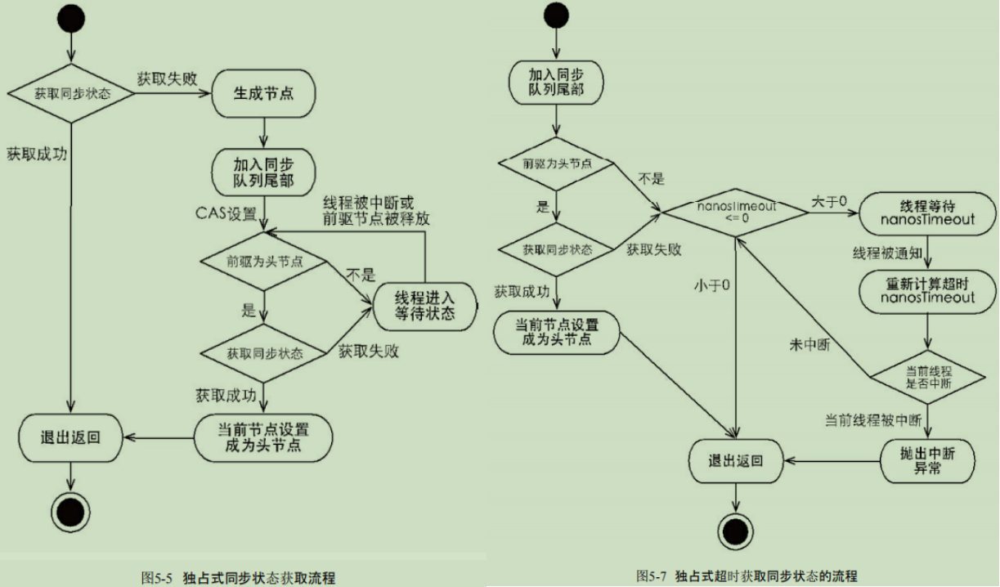

Java源码
AbstractQueuedSynchronizer
队列同步器 AbstractQueuedSynchronizer(AQS)，是用来构建锁或者其他同步组件的基础框架，
使用了一个volatile修饰的int成员变量表示同步状态，通过内置的FIFO队列来完成资源获取线程的排队工作。 同步器提供的如下3个方法来访问或修改同步状态: getState()：获取当前同步状态; setState(int newState)：设置当前同步状态; compareAndSetState(int expect,int update)：使用CAS设置当前状态，该方法能够保证状态 设置的原子性。 同步器自身没有实现任何同步接口，它仅仅是定义了若干同步状态获取和释放的方法来供自定义同步组件使用， 同步器既可以支持独占式地获取同步状态，也可以支持共享式地获取同步状态，这样就可以方便实现不同类型的同步组件 (ReentrantLock、 ReentrantReadWriteLock和CountDownLatch等)。 同步器接口: 同步器的设计是基于模板方法模式的,使用者需要继承同步器并重写指定的方法, 随后将同步器组合在自定义同步组件的实现中; 同步器提供的模板方法基本上分为3类:独占式获取与释放同步状态、共享式获取与释放同步状态、 查询同步队列中的等待线程情况。 同步器实现线程同步: 同步队列 同步器依赖内部的同步队列(一个FIFO双向队列)来完成同步状态的管理，此外还包含head、tail两个节点； head节点是位于队列头部的哨兵节点，其thread字段为null，其下一个节点是真正包含阻塞线程的节点； tail节点等于队列中真正的尾节点。队列为空时，head等于tail。 节点的等待状态包括:独占式同步状态获取与释放 acquire(int arg): 首先调用自定义同步器实现的tryAcquire(int arg)方法，该方法保证线程安全的获取同步状态，如果同步状态获取失败， 则构造同步节点(独占式 Node.EXCLUSIVE，同一时刻只能有一个线程成功获取同步状态)并通过addWaiter(Node node)方法 将该节点加入到同步队列的尾部，最后调用acquireQueued(Node node,int arg)方法，使得该节点以“死循环”的方式 获取同步状态。如果获取不到则阻塞节点中的线程，而被阻塞线程的唤醒主要依靠前驱节点的出队或阻塞线程被中断来实现。/** waitStatus value to indicate thread has cancelled */ static final int CANCELLED = 1; /** waitStatus value to indicate successor's thread needs unparking */ static final int SIGNAL = -1; /** waitStatus value to indicate thread is waiting on condition */ static final int CONDITION = -2; /** * waitStatus value to indicate the next acquireShared should * unconditionally propagate */ static final int PROPAGATE = -3;分析了独占式同步状态获取和释放过程后，适当做个总结：在获取同步状态时，同步器维护一个同步队列，获取状态失败的线程 都会被加入到队列中并在队列中进行自旋；移出队列(或停止自旋)的条件是前驱节点为头节点且成功获取了同步状态。 在释放同步状态时，同步器调用tryRelease(int arg)方法释放同步状态，然后唤醒头节点的后继节点。 共享式同步状态获取与释放 共享式获取与独占式获取最主要的区别在于同一时刻能否有多个线程同时获取到同步状态。public final void acquire(int arg) { if (!tryAcquire(arg) && //如果tryAcquire获取成功，则acquire()执行完毕 acquireQueued(addWaiter(Node.EXCLUSIVE), arg)) selfInterrupt(); } // tryAcquire失败，执行后续逻辑 //注意：该入队方法的返回值就是新创建的节点 private Node addWaiter(Node mode) { //基于当前线程，节点类型（Node.EXCLUSIVE）创建新的节点 //由于这里是独占模式，因此节点类型就是Node.EXCLUSIVE Node node = new Node(Thread.currentThread(), mode); Node pred = tail; //这里为了提高性能，首先执行一次快速入队操作，即直接尝试将新节点加入队尾 if (pred != null) { node.prev = pred; //这里根据CAS的逻辑，即使并发操作也只能有一个线程成功并返回，其余的都要执行后面的入队操作。即enq()方法 if (compareAndSetTail(pred, node)) { pred.next = node; return node; } } enq(node); return node; } //完整的入队操作 // 注意其中的CAS操作，以compareAndSetTail为例 // enq()通过CAS操作使得并发添加节点的请求变得"串行化" private Node enq(final Node node) { for (;;) { Node t = tail; //如果队列还没有初始化，则进行初始化，即创建一个空的头节点 if (t == null) { //同样是CAS，只有一个线程可以初始化头结点成功，其余的都要重复执行循环体 if (compareAndSetHead(new Node())) tail = head; } else { //新创建的节点指向队列尾节点，并发情况下这里会有多个新创建的节点指向此时的队列尾节点 node.prev = t; // 这一步的CAS操作，保证只有一个节点可以更新tail节点 // 更新成功的节点，此时t是旧tail节点，让t->next = node，返回尾节点的前驱结点 // 未成功更新的节点，则进行循环，重新尝试 if (compareAndSetTail(t, node)) { t.next = node; //该循环体唯一退出的操作，就是入队成功（否则就要无限重试） return t; } } } } private final boolean compareAndSetTail(Node expect, Node update) { return unsafe.compareAndSwapObject(this, tailOffset, expect, update); // 这里的this指当前AQS对象，tailOffser是tail字段在AQS中的偏移量，expect是现在看到的tail node， // update是要更新的尾节点。 // java中的对象引用实际上是C++中的对象指针， // 因此compareAndSwapObject的c++实现中，会比较 this+tailOffser 指向的地址和expect指向的地址是否相同 // 对于某一个节点而言，两者相等，可以更新this+tailOffser指向的地址为update指向的地址, 返回true; // 其余节点，看到的this+tailOffser指向的地址已经不同于之前看到的expect指向的地址，因此无法更新，返回false } // 参数中的node已经加入到同步队列中 // acquireQueued()方法是一个自旋过程，每个节点都在自省地观察，当条件满足，获取到了同步状态， // 就可以从这个自旋过程中退出，否则依旧留在这 个自旋过程中（并会阻塞节点的线程） final boolean acquireQueued(final Node node, int arg) { //锁资源获取失败标记位 boolean failed = true; try { //等待线程被中断标记位 boolean interrupted = false; //这个循环体执行的时机包括新节点入队和队列中等待节点被唤醒两个地方 for (;;) { //获取当前节点的前置节点 final Node p = node.predecessor(); //如果前置节点就是头结点，则尝试获取锁资源 if (p == head && tryAcquire(arg)) { //当前节点获得锁资源以后设置为头节点 //头结点就表示当前正占有锁资源的节点 setHead(node); // 此时会置 node的thread字段为null p.next = null; //表示锁资源成功获取，因此把failed置为false failed = false; //返回中断标记，表示当前节点是被正常唤醒还是被中断唤醒 return interrupted; } 如果没有获取锁成功，则进入挂起逻辑 if (shouldParkAfterFailedAcquire(p, node) && parkAndCheckInterrupt()) // parkAndCheckInterrupt()返回true,说明由于中断被唤醒 interrupted = true; // 无论是正常被唤醒，还是中断被唤醒，当前线程都会重新尝试去获取锁资源。 // 如果成功则返回中断标记，否则继续挂起等待 } } finally { //最后会分析获取锁失败处理逻辑 if (failed) cancelAcquire(node); } } /* 只有前驱节点是头节点才能够尝试获取同步状态: 1、头节点是成功获取到同步状态的节点，而头节点的线程释放了同步状态之后，将会唤醒其后继节点， 后继节点的线程被唤醒后需要检查自己的前驱节点是否是头节点。 2、维护同步队列的FIFO原则 */ //挂起线程 //首先说明一下参数，node是当前线程的节点，pred是它的前置节点 private static boolean shouldParkAfterFailedAcquire(Node pred, Node node) { //获取前置节点的waitStatus int ws = pred.waitStatus; if (ws == Node.SIGNAL) //如果前置节点的waitStatus是Node.SIGNAL则返回true，然后会执行parkAndCheckInterrupt()方法进行挂起 return true; // 返回true,说明可以挂起node中的线程 if (ws > 0) { // 说明ws==Node.CANCELLED //跳过所有已经取消的前置节点 do { node.prev = pred = pred.prev; } while (pred.waitStatus > 0); /* 这里我们由当前节点的前置节点开始，一直向前找最近的一个没有被取消的节点 由于头结点head是通过new Node()创建，它的waitStatus为0,因此这里不会出现空指针问题，即最多找到头节点， do-while循环就会退出 */ pred.next = node; } else { //根据waitStatus的取值限定，这里waitStatus的值只能是0或者PROPAGATE， //因此把前置节点的waitStatus设为Node.SIGNAL，然后重新进入该方法进行判断 compareAndSetWaitStatus(pred, ws, Node.SIGNAL); } return false; // 挂起条件不满足，重新执行acquireQueued方法的循环体 } private final boolean parkAndCheckInterrupt() { LockSupport.park(this); //被唤醒之后，返回中断标记，即如果是正常唤醒则返回false，如果是由于中断醒来，就返回true return Thread.interrupted(); /* Thread.interrupted()方法在返回中断标记的同时会清除中断标记，也就是说当由于中断醒来然后获取锁成功， 那么整个acquireQueued方法就会返回true表示是因为中断醒来，但如果中断醒来以后没有获取到锁，继续挂起， 由于这次的中断已经被清除了，下次如果是被正常唤醒，那么acquireQueued方法就会返回false，表示没有中断。 */ } // acquireQueued的finaly模块，处理tryAcquire可能出现的异常 //传入的方法参数是当前获取锁资源失败的节点 private void cancelAcquire(Node node) { // 如果节点不存在则直接忽略 if (node == null) return; node.thread = null; // 跳过所有已经取消的前置节点 Node pred = node.prev; while (pred.waitStatus > 0) node.prev = pred = pred.prev; // 已经取消的前驱节点的前驱结点成为当前节点的前驱结点 Node predNext = pred.next; //把当前节点waitStatus置为取消，这样别的节点在处理时就会跳过该节点 node.waitStatus = Node.CANCELLED; //如果当前是尾节点，则直接删除，即出队 //注：这里不用关心CAS失败，因为即使并发导致失败，该节点也已经被成功删除 if (node == tail && compareAndSetTail(node, pred)) { compareAndSetNext(pred, predNext, null); } else { int ws; if (pred != head && ((ws = pred.waitStatus) == Node.SIGNAL || (ws <= 0 && compareAndSetWaitStatus(pred, ws, Node.SIGNAL))) && pred.thread != null) { Node next = node.next; if (next != null && next.waitStatus <= 0) //如果当前节点的前置节点不是头节点且它后面的节点等待它唤醒（waitStatus小于0）， //再加上如果当前节点的后继节点没有被取消就把前置节点跟后置节点进行连接，相当于删除了当前节点 compareAndSetNext(pred, predNext, next); } else { //进入这里，要么当前节点的前置节点是头结点，要么前置节点的waitStatus是PROPAGATE， //直接唤醒当前节点的后继节点 unparkSuccessor(node); } node.next = node; // help GC } } // release方法 public final boolean release(int arg) { if (tryRelease(arg)) { Node h = head; /* 同步队列初始化时的head节点的waitStatus为0，其不需唤醒后继节点，此时占有锁的节点释放锁后， 同步队列中第一个阻塞线程的节点，因为其前驱结点是head节点，如果tryAcquire成功将获得锁， 该节点随后成为新的head，这部分在acquireQueued方法中实现， 新的head的waitStatus不是0，之后释放时会唤醒后继节点 */ if (h != null && h.waitStatus != 0) unparkSuccessor(h); //唤醒head 节点的后继节点 return true; } return false; }独占式超时获取同步状态// 共享式获取会忽略 interrupt public final void acquireShared(int arg) { if (tryAcquireShared(arg) < 0) doAcquireShared(arg); } private void doAcquireShared(int arg) { final Node node = addWaiter(Node.SHARED); boolean failed = true; try { boolean interrupted = false; for (;;) { // 如果当前节点的前驱为头节点时，尝试获取同步状态，如果返回值大于等于0， // 表示该次获取同步状态成功并从自旋过程中退出。 final Node p = node.predecessor(); if (p == head) { int r = tryAcquireShared(arg); if (r >= 0) { setHeadAndPropagate(node, r); p.next = null; // help GC if (interrupted) selfInterrupt(); failed = false; return; } } if (shouldParkAfterFailedAcquire(p, node) && parkAndCheckInterrupt()) interrupted = true; } } finally { if (failed) cancelAcquire(node); } } // 共享式释放 public final boolean releaseShared(int arg) { if (tryReleaseShared(arg)) { doReleaseShared(); return true; } return false; } /* 和独占式主要区别在于tryReleaseShared(int arg) 方法必须确保同步状态（或者资源数）线程安全释放， 一般是通过循环和CAS来保证的，因为释放同步状态的操作会同时来自多个线程。 */private boolean doAcquireNanos(int arg, long nanosTimeout) throws InterruptedException { if (nanosTimeout <= 0L) return false; final long deadline = System.nanoTime() + nanosTimeout; final Node node = addWaiter(Node.EXCLUSIVE); boolean failed = true; try { for (;;) { final Node p = node.predecessor(); if (p == head && tryAcquire(arg)) { setHead(node); p.next = null; // help GC failed = false; return true; } nanosTimeout = deadline - System.nanoTime(); if (nanosTimeout <= 0L) //说明等待时间已经耗尽 return false; // 等待时间小于spinForTimeoutThreshold(1000 ns)，进入快速自旋 // 因为非常短的超时等待无法做到十分精确 if (shouldParkAfterFailedAcquire(p, node) && nanosTimeout > spinForTimeoutThreshold) LockSupport.parkNanos(this, nanosTimeout); if (Thread.interrupted()) throw new InterruptedException(); } } finally { if (failed) cancelAcquire(node); } }

ReentrantLock
ReentrantLock内部有三个静态类，Sync(抽象类), FairSync, NonFairSync，后两个继承了Sync;
Sync中实现了nonfairTryAcquire和tryRelease方法；
NonFairSync中的tryAcquire方法直接调用了Sync中的nonfairTryAcquire方法；
FairSync中实现的tryAcquire方法在nonfairTryAcquire基础上，多了hasQueuedPredecessors判断。
- 非公平性的获取与释放
final boolean nonfairTryAcquire(int acquires) {
final Thread current = Thread.currentThread();
int c = getState();
if (c == 0) {
if (compareAndSetState(0, acquires)) {
setExclusiveOwnerThread(current);
return true;
}
}// 如果是获取锁的线程再次请求，则将同步状态值进行增加并返回 true，表示获取同步状态成功
else if (current == getExclusiveOwnerThread()) {
int nextc = c + acquires;
if (nextc < 0) // overflow
throw new Error("Maximum lock count exceeded");
setState(nextc);
return true;
}
return false;
}
/*
如果该锁被获取了n次，那么前(n-1)次tryRelease(int releases)方法必须返回false，
而只有同步状态完全释放了，才能返回true。可以看到，该方法将同步状态是否为0作为最终释放的条件，
当同步状态为0时，将占有线程设置为null，并返回true，表示释放成功
*/
protected final boolean tryRelease(int releases) {
int c = getState() - releases;
if (Thread.currentThread() != getExclusiveOwnerThread())
throw new IllegalMonitorStateException();
boolean free = false;
if (c == 0) {
free = true;
setExclusiveOwnerThread(null);
}
setState(c);
return free;
}
- 公平获取与释放
protected final boolean tryAcquire(int acquires) {
final Thread current = Thread.currentThread();
int c = getState();
if (c == 0) {
// hasQueuedPredecessors，判断加入了同步队列中当前节点是否有前驱节点，
// 如果返回true，则表示有线程比当前线程更早地请求获取锁，因此需要等待前驱线程获取并释放锁之后才能继续获取锁。
if (!hasQueuedPredecessors() &&
compareAndSetState(0, acquires)) {
setExclusiveOwnerThread(current);
return true;
}
}
else if (current == getExclusiveOwnerThread()) {
int nextc = c + acquires;
if (nextc < 0)
throw new Error("Maximum lock count exceeded");
setState(nextc);
return true;
}
return false;
}
ReentrantReadWriteLock
-
读写状态的设计
在一个整型变量上维护读、写状态，高16位表示读，低16位表示写；
state & 0x0000FFFF 获取写状态；当读状态增加1时，state+(1<<16);
因此S不等于0时，当写状态（S&0x0000FFFF）等于0时，则读 状态（S>>>16）大于0，即读锁已被获取。 -
写锁的获取与释放
写锁是一个支持重进入的排它锁。如果当前线程已经获取了写锁，则增加写状态。如果当前线程在获取写锁时， 读锁已经被获取（读状态不为0）或者该线程不是已经获取写锁的线程，则当前线程进入等待状态。
protected final boolean tryAcquire(int acquires) {
/*
* Walkthrough:
* 1. If read count nonzero or write count nonzero
* and owner is a different thread, fail.
* 2. If count would saturate, fail. (This can only
* happen if count is already nonzero.)
* 3. Otherwise, this thread is eligible for lock if
* it is either a reentrant acquire or
* queue policy allows it. If so, update state
* and set owner.
*/
Thread current = Thread.currentThread();
int c = getState();
int w = exclusiveCount(c); // w=state & 0x0000ffff
if (c != 0) {
// (Note: if c != 0 and w == 0 then shared count != 0)，即存在读锁
if (w == 0 || current != getExclusiveOwnerThread())
return false;
if (w + exclusiveCount(acquires) > MAX_COUNT)
throw new Error("Maximum lock count exceeded");
// Reentrant acquire
setState(c + acquires);
return true;
}
if (writerShouldBlock() ||
!compareAndSetState(c, c + acquires))
return false;
setExclusiveOwnerThread(current);
return true;
}
- 读锁的获取与释放
读锁是一个支持重进入的共享锁，它能够被多个线程同时获取，在没有其他写线程访问 （或者写状态为0）时，读锁总会被成功地获取，而所做的也只是（线程安全的）增加读状态。如 果当前线程已经获取了读锁，则增加读状态。如果当前线程在获取读锁时，写锁已被其他线程 获取，则进入等待状态。
protected final int tryAcquireShared(int unused) {
/*
* Walkthrough:
* 1. If write lock held by another thread, fail.
* 2. Otherwise, this thread is eligible for
* lock wrt state, so ask if it should block
* because of queue policy. If not, try
* to grant by CASing state and updating count.
* Note that step does not check for reentrant
* acquires, which is postponed to full version
* to avoid having to check hold count in
* the more typical non-reentrant case.
* 3. If step 2 fails either because thread
* apparently not eligible or CAS fails or count
* saturated, chain to version with full retry loop.
*/
Thread current = Thread.currentThread();
int c = getState();
if (exclusiveCount(c) != 0 &&
getExclusiveOwnerThread() != current)
return -1;
int r = sharedCount(c);
if (!readerShouldBlock() &&
r < MAX_COUNT &&
compareAndSetState(c, c + SHARED_UNIT)) { // SHARED_UNIT = 1<<16
if (r == 0) {
firstReader = current;
firstReaderHoldCount = 1;
} else if (firstReader == current) {
firstReaderHoldCount++;
} else {
HoldCounter rh = cachedHoldCounter;
if (rh == null || rh.tid != getThreadId(current))
cachedHoldCounter = rh = readHolds.get();
else if (rh.count == 0)
readHolds.set(rh);
rh.count++;
}
return 1;
}
return fullTryAcquireShared(current);
}
- 锁降级
锁降级是指把持住（当前拥有的）写锁，再获取到 读锁，随后释放（先前拥有的）写锁的过程
// 伪代码
public void processData() {
readLock.lock();
if (!update) {
// 必须先释放读锁，否则无法获取写锁
readLock.unlock();
// 锁降级从写锁获取到开始
writeLock.lock();
try {
if (!update) {
// 准备数据的流程（略）
update = true;
}
readLock.lock();
/*
这里读锁获取是必要的，主要是为了保证数据的可见性，
如果当前线程不获取读锁而是直接释放写锁，假设此刻另一个线程（记作线程T）获取了写锁并修改了数据，
那么当前线程无法感知线程T的数据更新。如果当前线程获取读锁，即遵循锁降级的步骤，
则线程T获取写锁将会被阻塞，直到当前线程使用数据并释放读锁之后，线程T才能获取写锁进行数据更新
*/
} finally {
writeLock.unlock();
}// 锁降级完成，写锁降级为读锁
}
try {
// 使用数据的流程（略）
} finally {
readLock.unlock();
}
}
HashMap
1、基于HashTable的实现, provides all of the optional map operations, permits null value and null key, and is unsynchronized.2、HashMap的capacity指 the number of buckets in the hash table; When the number of entries(entry:key-value) in the hash table exceeds the product of the load factor and the current capacity, the hash table is rehashed . capacity: hash table中bin/bucket的数量，初始化HashMap时不指定initialCapacity，则 initialCpacity默认取16；capacity的取值一定是2的幂次，这样在计算 hashCode%capacity时，可以使用 hashCode & (capacity-1)来代替，效率更高。public HashMap(int initialCapacity, float loadFactor) { if (initialCapacity < 0) throw new IllegalArgumentException("Illegal initial capacity: " + initialCapacity); if (initialCapacity > MAXIMUM_CAPACITY) initialCapacity = MAXIMUM_CAPACITY; if (loadFactor <= 0 || Float.isNaN(loadFactor)) throw new IllegalArgumentException("Illegal load factor: " + loadFactor); this.loadFactor = loadFactor; this.threshold = tableSizeFor(initialCapacity); } public HashMap(int initialCapacity) { this(initialCapacity, DEFAULT_LOAD_FACTOR); } public HashMap() { this.loadFactor = DEFAULT_LOAD_FACTOR; // all other fields defaulted // 采用这种方式初始化时，查看capacity，返回默认值16； // 查看threshold, 为0 } public HashMap(Map<? extends K, ? extends V> m) { this.loadFactor = DEFAULT_LOAD_FACTOR; putMapEntries(m, false); }threshold: 当size > threshold时，hash table需要进行扩容; 初始化时，threshold = tableSize(initialCapacity);此时调用capacity()返回threshold;final int capacity() { return (table != null) ? table.length : (threshold > 0) ? threshold : DEFAULT_INITIAL_CAPACITY; }size: hash table中key-value的数量 load factor = size/capacity 3、default load factor is 0.75, offering a good tradeoff between time and space costs. 4、HashMap的正常形式是数组+链表,数组每个位置称为bin or bucket,当一个bin中的元素过多(超过TREEIFY_THRESHOLD)， 即碰撞严重, 这个bin中的Node就会转变为 TreeNode, 该bin称为TreeBin, TreeBin以红黑树形式构建. 阈值一般设定为8: under random hashCodes, 一个bin中各个节点的碰撞频率符号泊松分布;在load factor=0.75基础上, 平均参数 λ=0.5, 而bin中元素个数为k, 则每个元素出现概率为(exp(-0.5) * pow(0.5, k) / factorial(k)), k=8时，probability=0.00000006,为亿分之六。 单个TreeNode大小是普通Node大小的2倍, 虽然红黑树平均查找是O(log N), 链表平均查找是O(log N);但 N较小时，使用红黑树的空间和建树时间都要大于链表；由上可知，bin中元素为8时，发生冲突的概率极低， 因此当bin中元素小于8时，使用链表是比较合适的；当插入新元素后，binCount大于等于8个元素时(即此时binCount=7)， 转为红黑树，可以保证有比较好的查找性能；树形化后，当删除一个节点前，bitCount小于等于6时，可以由红黑树重新转为链表； 设定为6，而非7，是为了避免频繁在链表和树之间进行转换。 除TREEIFY_THRESHOLD外，还有一个参数MIN_TREEIFY_CAPACITY，只有hash table的capacity大于这个参数， 才允许将链表转为树，否则桶内元素过多，应该进行扩容，而不是树形化。static final int tableSizeFor(int cap) { int n = cap - 1; // 避免 cap已经是2的幂次 n |= n >>> 1; n |= n >>> 2; n |= n >>> 4; n |= n >>> 8; n |= n >>> 16; /* 假设n的二进制为01xxx...xxx。接着 对n右移1位：001xx...xxx，再位或，结果为：011xx...xxx 对n右移2为：00011...xxx，再位或，结果为：01111...xxx 右移4位，可得8个1，因为int 为32位，因此最多右移16位 最后的结果是让原始n最高位的1后面的位全变为1, 返回n+1，即得到了2的整数次幂的值了。 如果 n=cap，而cap=2^x，最后返回的结果将是 2^(x+1) */ return (n < 0) ? 1 : (n >= MAXIMUM_CAPACITY) ? MAXIMUM_CAPACITY : n + 1; // 使用另一个HashMap m来初始化当前HashMap, 此时threshold通过下面方式来设置，其中s=m.size() if (table == null) { // pre-size float ft = ((float)s / loadFactor) + 1.0F; int t = ((ft < (float)MAXIMUM_CAPACITY) ? (int)ft : MAXIMUM_CAPACITY); if (t > threshold) threshold = tableSizeFor(t); } else if (s > threshold) resize(); } final Node<K,V>[] resize() { Node<K,V>[] oldTab = table; int oldCap = (oldTab == null) ? 0 : oldTab.length; int oldThr = threshold; int newCap, newThr = 0; if (oldCap > 0) { if (oldCap >= MAXIMUM_CAPACITY) { * threshold = Integer.MAX_VALUE; return oldTab; } else if ((newCap = oldCap << 1) < MAXIMUM_CAPACITY && ** oldCap >= DEFAULT_INITIAL_CAPACITY) // 如果新容量大于等于MAXIMUM_CAPACITY 或者 旧容量小于默认初始容量，此时不需要修改threshold newThr = oldThr << 1; // double threshold }// 说明是刚进行初始化，此时hash table中尚未插入key-val else if (oldThr > 0) // initial capacity was placed in threshold *** newCap = oldThr; else { // 说明初始化时没有指定initialCapacity和load factor **** newCap = DEFAULT_INITIAL_CAPACITY; newThr = (int)(DEFAULT_LOAD_FACTOR * DEFAULT_INITIAL_CAPACITY); } if (newThr == 0) { // 对应 *** 处 float ft = (float)newCap * loadFactor; newThr = (newCap < MAXIMUM_CAPACITY && ft < (float)MAXIMUM_CAPACITY ? (int)ft : Integer.MAX_VALUE); } threshold = newThr; @SuppressWarnings({"rawtypes","unchecked"}) Node<K,V>[] newTab = (Node<K,V>[])new Node[newCap]; table = newTab; if (oldTab != null) { // 遍历旧的hash table for (int j = 0; j < oldCap; ++j) { Node<K,V> e; if ((e = oldTab[j]) != null) { // 取出旧hash table，第j个bin的first node赋给 e oldTab[j] = null; if (e.next == null) // 第j个bin中的链表只有1个节点 newTab[e.hash & (newCap - 1)] = e; // 则直接将这个元素放置在新的哈希桶里。 else if (e instanceof TreeNode) ((TreeNode<K,V>)e).split(this, newTab, j, oldCap); // 链表中节点数多于1个，但小于8个，则要根据链表上每个节点的哈希值，依次放入新哈希桶对应下标位置 else { //preserve order /* 因为扩容是容量翻倍，所以原链表上的每个节点，现在可能存放在原来的下标，即low位， 或者扩容后的下标，即high位。 high位= low位+原哈希桶容量 */ Node<K,V> loHead = null, loTail = null; Node<K,V> hiHead = null, hiTail = null; Node<K,V> next; do { next = e.next; if ((e.hash & oldCap) == 0) {// 说明节点hash值小于旧cap，放在低位链表中 if (loTail == null) loHead = e; else loTail.next = e; loTail = e; } else { if (hiTail == null) hiHead = e; else hiTail.next = e; hiTail = e; } } while ((e = next) != null); // 将低位链表存放在原index处， if (loTail != null) { loTail.next = null; newTab[j] = loHead; } // 将高位链表存放在新index处 if (hiTail != null) { hiTail.next = null; newTab[j + oldCap] = hiHead; } } } } } return newTab; }5、hash 在hashMap类中定义了hash方法public V put(K key, V value) { return putVal(hash(key), key, value, false, true); } /** * Implements Map.put and related methods * * @param hash hash for key * @param key the key * @param value the value to put * @param onlyIfAbsent if true, don't change existing value * @param evict if false, the table is in creation mode. * @return previous value, or null if none */ final V putVal(int hash, K key, V value, boolean onlyIfAbsent, boolean evict) { Node<K,V>[] tab; Node<K,V> p; int n, i; if ((tab = table) == null || (n = tab.length) == 0) n = (tab = resize()).length; // 如果tab不为null，但tab.length=0,则需要扩容 if ((p = tab[i = (n - 1) & hash]) == null) // 插入一个 new node tab[i] = newNode(hash, key, value, null); else { Node<K,V> e; K k; if (p.hash == hash && ((k = p.key) == key || (key != null && key.equals(k)))) e = p; // e is the first node else if (p instanceof TreeNode) e = ((TreeNode<K,V>)p).putTreeVal(this, tab, hash, key, value); else { for (int binCount = 0; ; ++binCount) { if ((e = p.next) == null) { // 在当前bin的链表中插入一个新的节点 p.next = newNode(hash, key, value, null); if (binCount >= TREEIFY_THRESHOLD - 1) // -1 for 1st treeifyBin(tab, hash); // 插入之前binCount>=7，则插入新的节点后，需要树形化bin break; } if (e.hash == hash && // 找到已覆盖的节点 ((k = e.key) == key || (key != null && key.equals(k)))) break; p = e; } } if (e != null) { // existing mapping for key V oldValue = e.value; // 覆盖节点值 if (!onlyIfAbsent || oldValue == null) e.value = value; afterNodeAccess(e); // 在HashMap中没有实现这个方法，用以LinkedHashMap重载 return oldValue; // 返回旧值 } } ++modCount; if (++size > threshold) resize(); afterNodeInsertion(evict); return null; }static final int hash(Object key) { int h; return (key == null) ? 0 : (h = key.hashCode()) ^ (h >>> 16); } /* 这里解释一下 h ^ (h>>>16) 由于在计算 index时使用: index = hashcode & (capacity-1); 假设capacity-1 的二进制为 0b000...01111, 而两个不同的key的hashcode它们的区别在于高28位，低4位是相同的， 则如果直接计算 hashcode & (capacity-1)，会发生hash碰撞 而 h^(h>>>16)，保证了h的高16位不变，而低16位和高16位进行异或，相当于在低16位引入高16位特征， 这样可以降低碰撞几率。 */
ConcurrentHashMap
jdk1.8与jdk1.7中实现有较大差异，这里介绍的是jdk1.8中的实现。
1、初始化2、sizeCtl sizeCtl=0，代表数组未被初始化，默认初始容量为16； sizeCtl>0，如果数组未初始化，那么记录数组的初始容量。如果数组已初始化， 那么其记录数组的扩容阈值（数组的初始容量 * load factor）； sizeCtl=-1，表示是数组正在解析初始化； sizeCtl = -n (n>1)，有多个线程正在扩容; 其中以低16位表示正数m, 表示有m-1个线程在帮着扩容； 高16以无符号形式左移16位，然后减去 1 << 15, 得到 numLeadingZeros, 扩容前的容量大小等于 2^(32-numLeadingZeros)>。 3、添加元素 多线程协助扩容的操作会在两个地方(*协助扩容)被触发： 当添加元素时，发现添加的元素对应桶位为fwd节点，就会先去协助扩容，然后再添加元素 当添加完元素后，判断当前元素个数达到了扩容阈值，此时发现sizeCtl的值小于0，并且新数组不为空，这个时候，会去协助扩容。public ConcurrentHashMap() { // 默认table size 为16 } public ConcurrentHashMap(int initialCapacity) { if (initialCapacity < 0) throw new IllegalArgumentException(); // 这里与1.7不同，hash table的capacity为大于等于 (1.5*initialCapaccity+1)的2的幂次 // 1.7中，传入32，则cap=32, 而在1.8中，传入32，cap=64 int cap = ((initialCapacity >= (MAXIMUM_CAPACITY >>> 1)) ? MAXIMUM_CAPACITY : tableSizeFor(initialCapacity + (initialCapacity >>> 1) + 1)); this.sizeCtl = cap; } public ConcurrentHashMap(Map<? extends K, ? extends V> m) { this.sizeCtl = DEFAULT_CAPACITY; putAll(m); } public ConcurrentHashMap(int initialCapacity, float loadFactor) { this(initialCapacity, loadFactor, 1); }public V put(K key, V value) { return putVal(key, value, false); } /** Implementation for put and putIfAbsent */ final V putVal(K key, V value, boolean onlyIfAbsent) { if (key == null || value == null) throw new NullPointerException(); int hash = spread(key.hashCode()); int binCount = 0; for (Node<K,V>[] tab = table;;) { Node<K,V> f; int n, i, fh; if (tab == null || (n = tab.length) == 0) tab = initTable(); else if ((f = tabAt(tab, i = (n - 1) & hash)) == null) { if (casTabAt(tab, i, null, new Node<K,V>(hash, key, value, null))) break; // no lock when adding to empty bin } // MOVED=-1，当前节点hash值=-1，代表是forward节点，说明节点已经被迁移到新table， // 即有线程在对当前table进行扩容，于是当前线程会进行协助扩容 else if ((fh = f.hash) == MOVED) tab = helpTransfer(tab, f); // *协助扩容 else { V oldVal = null; synchronized (f) {// 锁住当前bin中的头节点，保证当前线程的插入安全；同时不影响其他bin的插入 // 这里再次进行判断，是为了防止多线程同时在一个bin中插入元素时，第一个线程插入导致 // bin树形化或者整个table进行扩容，另一个线程持有的f位置发生变化 if (tabAt(tab, i) == f) { if (fh >= 0) { binCount = 1; // 遍历链表，找到插入位置 for (Node<K,V> e = f;; ++binCount) { K ek; if (e.hash == hash && ((ek = e.key) == key || (ek != null && key.equals(ek)))) { oldVal = e.val; if (!onlyIfAbsent) e.val = value; break; } Node<K,V> pred = e; if ((e = e.next) == null) { //在链表尾部插入一个新节点 pred.next = new Node<K,V>(hash, key, value, null); break; } } } else if (f instanceof TreeBin) { Node<K,V> p; binCount = 2; if ((p = ((TreeBin<K,V>)f).putTreeVal(hash, key, value)) != null) { oldVal = p.val; if (!onlyIfAbsent) p.val = value; } } } } if (binCount != 0) { if (binCount >= TREEIFY_THRESHOLD) treeifyBin(tab, i); if (oldVal != null) return oldVal; break; } } } // 维护hash table中key-value个数，同时判断是否超过扩容阈值，需要扩容 addCount(1L, binCount); return null; } static final int spread(int h) { return (h ^ (h >>> 16)) & HASH_BITS; /* HASH_BITS = 0X7FFFFFFF spread作用和hashMap中的hash()方法类似，在低16位引入高位特征，降低计算index时碰撞几率; 与上 HASH_BITS，则保证返回值一定是一个非负数 */ } /** * Initializes table, using the size recorded in sizeCtl. */ private final Node<K,V>[] initTable() { Node<K,V>[] tab; int sc; while ((tab = table) == null || tab.length == 0) { if ((sc = sizeCtl) < 0) // 说明有线程在进行初始化 table,因此当前线程需要让出CPU Thread.yield(); // lost initialization race; just spin else if (U.compareAndSwapInt(this, SIZECTL, sc, -1)) { try { // 这里再次判断，是进行双重检测，防止其他线程进行重复初始化 if ((tab = table) == null || tab.length == 0) { int n = (sc > 0) ? sc : DEFAULT_CAPACITY; @SuppressWarnings("unchecked") Node<K,V>[] nt = (Node<K,V>[])new Node<?,?>[n]; table = tab = nt; sc = n - (n >>> 2); // sc = n-n/4 = 3n/4 = n*0.75, 代表扩容阈值 } } finally { sizeCtl = sc; // 完成初始化后，sizeCtl代表的是扩容阈值 } break; } } return tab; } private final void addCount(long x, int check) {// 传入的check是bin中累加次数 CounterCell[] as; long b, s; //当CounterCell数组不为空，则优先利用数组中的CounterCell记录数量 //当 baseCount通过CAS实现累加操作成功，则直接结束；否则利用数组中的CounterCell记录数量 if ((as = counterCells) != null || !U.compareAndSwapLong(this, BASECOUNT, b = baseCount, s = b + x)) { CounterCell a; long v; int m; //标识是否有多线程竞争 boolean uncontended = true; //当as数组为空 //或者当as长度为0 //或者当前线程对应的as数组桶位的元素为空 //或者当前线程对应的as数组桶位不为空，但是累加失败 if (as == null || (m = as.length - 1) < 0 || (a = as[ThreadLocalRandom.getProbe() & m]) == null || !(uncontended = U.compareAndSwapLong(a, CELLVALUE, v = a.value, v + x))) { //以上任何一种情况成立，都会进入该方法，传入的uncontended是false fullAddCount(x, uncontended); return; } if (check <= 1) // 传入的check>=0，如果check=0,说明插入元素时，直接在空的bin中创建了一个节点 // check=1,说明bin中头节点的值被覆盖了；这两种情况都不必判断是否需要扩容 return; //计算元素个数 s = sumCount(); } if (check >= 0) { Node<K,V>[] tab, nt; int n, sc; //当元素个数达到扩容阈值 //并且数组不为空 //并且数组长度小于限定的最大值 //满足以上所有条件，执行扩容 while (s >= (long)(sc = sizeCtl) && (tab = table) != null && (n = tab.length) < MAXIMUM_CAPACITY) { //这个是一个很大的正数 int rs = resizeStamp(n); // rs = (n的前导0个数) | (1<< 15) // 第一次sc代表扩容阈值大于0 // 当sc小于0，说明有线程正在扩容，那么会协助扩容 if (sc < 0) { //扩容结束或者扩容线程数达到最大值或者扩容后的数组为null或者没有更多的桶位需要转移，结束操作 if ((sc >>> RESIZE_STAMP_SHIFT) != rs || sc == rs + 1 || sc == rs + MAX_RESIZERS || (nt = nextTable) == null || transferIndex <= 0) break; //扩容线程数加1，成功后，进行协助扩容操作 if (U.compareAndSwapInt(this, SIZECTL, sc, sc + 1)) //协助扩容，newTable不为null transfer(tab, nt); // *协助扩容 } //没有其他线程在进行扩容，达到扩容阈值后，给sizeCtl赋了一个很大的负数 //rs << RESIZE_STAMP_SHIFT是一个很大的负数 // rs的第15位一定为1，rs再向左移动16位，则最高位为1，此时rs变为负数 // 通过CAS操作将新值赋给sizeCtl else if (U.compareAndSwapInt(this, SIZECTL, sc, (rs << RESIZE_STAMP_SHIFT) + 2)) //扩容，newTable为null transfer(tab, null); s = sumCount(); } } } private final void fullAddCount(long x, boolean wasUncontended) { // 由于addCount中自旋累加失败而调用fullAddCount方法，传入wasUncontended=false; // 否则传入的为true int h; //获取当前线程的hash值，用于计算数组下标 if ((h = ThreadLocalRandom.getProbe()) == 0) { * ThreadLocalRandom.localInit(); // force initialization h = ThreadLocalRandom.getProbe(); wasUncontended = true; } //标识是否有冲突，如果最后一个桶不是null，那么为true boolean collide = false; // True if last slot nonempty for (;;) { CounterCell[] as; CounterCell a; int n; long v; // 数组不为空，优先对数组中CouterCell的value累加 // 第一次执行该方法时，不会进入，而是会先进行数组的创建；此后再次执行时，会进入 if ((as = counterCells) != null && (n = as.length) > 0) { //线程对应的桶位为null，可以尝试直接在该位置创建一个CounterCell对象 //否则会计算一个新位置，再尝试 if ((a = as[(n - 1) & h]) == null) { ** if (cellsBusy == 0) { // Try to attach new Cell //创建CounterCell对象 CounterCell r = new CounterCell(x); // Optimistic create //利用CAS修改cellBusy状态为1，成功则将刚才创建的CounterCell对象放入数组中 if (cellsBusy == 0 && U.compareAndSwapInt(this, CELLSBUSY, 0, 1)) { boolean created = false; try { // Recheck under lock CounterCell[] rs; int m, j; //桶位为空， 将CounterCell对象放入数组 if ((rs = counterCells) != null && (m = rs.length) > 0 && rs[j = (m - 1) & h] == null) { rs[j] = r; //表示放入成功 created = true; } } finally { cellsBusy = 0; } if (created) //成功退出循环 break; //桶位已经被别的线程放置了已给CounterCell对象，继续循环 continue; // Slot is now non-empty } } collide = false; } // 如果 * 处得到h不为0，则此时的h与addCount中尝试进行CAS累计前计算的hash是一致的 // 且 ** 处根据h计算位置上的bin不为空，因此需要重新计算hash值， // 此时调用的是ThreadLocalRandom.advanceProbe(h)，根据旧probe值生成新的probe值 else if (!wasUncontended) // CAS already known to fail wasUncontended = true; // Continue after rehash //重新计算了hash值后，对应的桶位依然不为空，对value累加 //成功则结束循环 //失败则继续下面判断 else if (U.compareAndSwapLong(a, CELLVALUE, v = a.value, v + x)) break; //数组被别的线程改变了，或者数组长度超过了可用cpu大小，重新计算线程hash值，否则继续下一个判断 else if (counterCells != as || n >= NCPU) collide = false; // At max size or stale //当没有冲突，修改为有冲突，并重新计算线程hash，继续循环 else if (!collide) collide = true; //如果CounterCell的数组长度没有超过cpu核数，对数组进行两倍扩容 //并继续循环 else if (cellsBusy == 0 && U.compareAndSwapInt(this, CELLSBUSY, 0, 1)) { try { if (counterCells == as) {// Expand table unless stale CounterCell[] rs = new CounterCell[n << 1]; for (int i = 0; i < n; ++i) rs[i] = as[i]; counterCells = rs; } } finally { cellsBusy = 0; } collide = false; continue; // Retry with expanded table } h = ThreadLocalRandom.advanceProbe(h); } //CounterCell数组为空，并且没有线程在创建数组，修改标记，并创建数组 else if (cellsBusy == 0 && counterCells == as && U.compareAndSwapInt(this, CELLSBUSY, 0, 1)) { boolean init = false; try { // Initialize table if (counterCells == as) { CounterCell[] rs = new CounterCell[2]; rs[h & 1] = new CounterCell(x); counterCells = rs; init = true; } } finally { cellsBusy = 0; } if (init) break; } //数组为空，并且有别的线程在创建数组，那么尝试对baseCount做累加，成功就退出循环，失败就继续循环 else if (U.compareAndSwapLong(this, BASECOUNT, v = baseCount, v + x)) break; // Fall back on using base } } // 统计当前table中key-value个数 final long sumCount() { CounterCell[] as = counterCells; CounterCell a; long sum = baseCount; if (as != null) { for (int i = 0; i < as.length; ++i) { if ((a = as[i]) != null) sum += a.value; } } return sum; } /** * 桶扩容 * @param tab 原桶 * @param nextTab 协助扩容桶 */ private final void transfer(Node<K,V>[] tab, Node<K,V>[] nextTab) { int n = tab.length, stride; // 将length/8, 然后除以CPU核数。如果得到的结果小于16, 那么就使用16。 // 目的：让每个CPU处理的桶一样多, 避免出现转移任务不均匀的现象。 // 如果桶较少的话, 默认一个 CPU（一个线程）处理 16 个桶 if ((stride = (NCPU > 1) ? (n >>> 3) / NCPU : n) < MIN_TRANSFER_STRIDE) stride = MIN_TRANSFER_STRIDE; // subdivide range if (nextTab == null) { // initiating try { // 扩容2倍 @SuppressWarnings("unchecked") Node<K,V>[] nt = (Node<K,V>[])new Node<?,?>[n << 1]; nextTab = nt; } catch (Throwable ex) { // try to cope with OOME sizeCtl = Integer.MAX_VALUE; return; } // 保存新表在成员变量中 nextTable = nextTab; // transferIndex属于成员变量，transferIndex-1 代表当前线程扩容时在旧table中的起始位置，向前移动 transferIndex = n; } int nextn = nextTab.length; // 创建一个fwd节点, 用于占位。 // 当其他线程发现这个槽位中是fwd类型的节点, 则跳过这个节点。 ForwardingNode<K,V> fwd = new ForwardingNode<K,V>(nextTab); boolean advance = true; // 用来标记是否完成，方便提交更改 boolean finishing = false; // to ensure sweep before committing nextTab for (int i = 0, bound = 0;;) { Node<K,V> f; int fh; // 先获取锁定一下转移数据表的索引范围值bound ~ i while (advance) { int nextIndex, nextBound; if (--i >= bound || finishing) // 不停往前移动表索引 advance = false; else if ((nextIndex = transferIndex) <= 0) { // 如果是<= 0，表明转移全部完成 i = -1; advance = false; } else if (U.compareAndSwapInt (this, TRANSFERINDEX, nextIndex, nextBound = (nextIndex > stride ? nextIndex - stride : 0))) { // transferIndex减去步伐stride，下个线程就从新的索引处nextBound转移数据 bound = nextBound; i = nextIndex - 1; advance = false; } } if (i < 0 || i >= n || i + n >= nextn) { int sc; if (finishing) { // 将新表替换旧表 nextTable = null; table = nextTab; // 扩容完成后，重新计算扩容阈值 // sizeCtl = 2n - n/2 = 1.5n = 2n*0.75 sizeCtl = (n << 1) - (n >>> 1); return; } // 当前的线程完成其所负责的分区的迁移，sizeCtl = sc-1, // 这样正在进行扩容的线程数就减一 if (U.compareAndSwapInt(this, SIZECTL, sc = sizeCtl, sc - 1)) { // 因为第一个线程进行扩容时，sc = resizeStamp(n)<< RESIZE_STAMP_SHIFT + 2 // 因此如果 sc-2 == resizeStamp(n)<< RESIZE_STAMP_SHIFT // 说明所有线程都完成各自分区迁移，即整个table的扩容操作完成 // 反之，则还有线程未完成，直接return if ((sc - 2) != resizeStamp(n) << RESIZE_STAMP_SHIFT) return; // 转移完成 finishing = advance = true; i = n; // recheck before commit } } else if ((f = tabAt(tab, i)) == null) // 如原来的表没有数据，则直接设置一个转移节点到旧表中 advance = casTabAt(tab, i, null, fwd); else if ((fh = f.hash) == MOVED) // 有可能其他的线程已经处理过 advance = true; // already processed else { // 锁定表中对应桶，然后进行数据转移，元素要不还在原来i对应的低位桶，要不就在高位(i+n)对应桶 synchronized (f) { if (tabAt(tab, i) == f) { // 二次确认，防止被其他线程抢 Node<K,V> ln, hn; if (fh >= 0) { // hash值大于0，普通的链表 /* f 1 2 3 4 5 6 0 x 0 x x x x (x>0) 假设第二列代表相应节点hash & n的结果 则 =0的节点在新table中依旧位于i位置，=x的节点在新table中位置则位于i+n 4号节点即是lastRun,因为其后的所有节点的hash值都为x，这样可以直接将 4号节点即之后的所有节点都迁移到新table中i+n位置，相比每个节点都要判断一次，减少了迁移次数 */ int runBit = fh & n; Node<K,V> lastRun = f; for (Node<K,V> p = f.next; p != null; p = p.next) { int b = p.hash & n; if (b != runBit) { runBit = b; lastRun = p; } } if (runBit == 0) {//说明后面一批节点的 hash&n 的结果都为0 ln = lastRun; hn = null; } else { //说明后面一批节点的 hash&n 的结果都为x hn = lastRun; ln = null; } // 重新建立新链表 for (Node<K,V> p = f; p != lastRun; p = p.next) { // 遍历到lastRun即可，后面的节点一定和lastRun处于同一个链表中 int ph = p.hash; K pk = p.key; V pv = p.val; if ((ph & n) == 0) ln = new Node<K,V>(ph, pk, pv, ln); // (cur:key-value) -> ln, 然后 ln = cur else hn = new Node<K,V>(ph, pk, pv, hn); // (cur2:key-value) -> hn, 然后 hn = cur2 } // 设置新表低位、高位的头，并将原来的节点设置为转移节点 setTabAt(nextTab, i, ln); setTabAt(nextTab, i + n, hn); setTabAt(tab, i, fwd); advance = true; } else if (f instanceof TreeBin) { // 二叉树 TreeBin<K,V> t = (TreeBin<K,V>)f; TreeNode<K,V> lo = null, loTail = null; TreeNode<K,V> hi = null, hiTail = null; int lc = 0, hc = 0; // 将二叉树的节点分成低位元素和高位元素链表 for (Node<K,V> e = t.first; e != null; e = e.next) { int h = e.hash; TreeNode<K,V> p = new TreeNode<K,V> (h, e.key, e.val, null, null); if ((h & n) == 0) { // 低位元素 if ((p.prev = loTail) == null) lo = p; else loTail.next = p; loTail = p; ++lc; } else { // 高位元素 if ((p.prev = hiTail) == null) hi = p; else hiTail.next = p; hiTail = p; ++hc; } } // 如果元素链表数量小于6，则退化成链表，否则就生产二叉树 ln = (lc <= UNTREEIFY_THRESHOLD) ? untreeify(lo) : (hc != 0) ? new TreeBin<K,V>(lo) : t; hn = (hc <= UNTREEIFY_THRESHOLD) ? untreeify(hi) : (lc != 0) ? new TreeBin<K,V>(hi) : t; // 设置新表的头，并且将旧表设置为转移节点 setTabAt(nextTab, i, ln); setTabAt(nextTab, i + n, hn); setTabAt(tab, i, fwd); advance = true; } } } } } } final Node<K,V>[] helpTransfer(Node<K,V>[] tab, Node<K,V> f) { Node<K,V>[] nextTab; int sc; if (tab != null && (f instanceof ForwardingNode) && (nextTab = ((ForwardingNode<K,V>)f).nextTable) != null) { int rs = resizeStamp(tab.length); while (nextTab == nextTable && table == tab && (sc = sizeCtl) < 0) { if ((sc >>> RESIZE_STAMP_SHIFT) != rs || sc == rs + 1 || sc == rs + MAX_RESIZERS || transferIndex <= 0) break; // 尝试给sizeCtl赋新值，其结果的低16位会加1，表明正在扩容的线程数+1 if (U.compareAndSwapInt(this, SIZECTL, sc, sc + 1)) { transfer(tab, nextTab); break; } } return nextTab; } return table; }
ThreadPoolExecutor
run stateexecute// 这里设置ctl类型为AtomicInteger，其内部基于CAS+volatile实现，CAS保证原子性，volatile保证可见性 // 因为状态的访问类型是读多写少，采用CAS+volatile要比synchronized开销更少; // 由于CAS只能保证一个变量读写的原子性，因此这里用一个变量来表示两种共享特征(运行状态和线程数量) private final AtomicInteger ctl = new AtomicInteger(ctlOf(RUNNING, 0)); private static final int COUNT_BITS = Integer.SIZE - 3; private static final int CAPACITY = (1 << COUNT_BITS) - 1; // runState is stored in the high-order bits private static final int RUNNING = -1 << COUNT_BITS; private static final int SHUTDOWN = 0 << COUNT_BITS; private static final int STOP = 1 << COUNT_BITS; private static final int TIDYING = 2 << COUNT_BITS; private static final int TERMINATED = 3 << COUNT_BITS; // Packing and unpacking ctl private static int runStateOf(int c) { return c & ~CAPACITY; } private static int workerCountOf(int c) { return c & CAPACITY; } private static int ctlOf(int rs, int wc) { return rs | wc; }关闭线程池public void execute(Runnable command) { if (command == null) throw new NullPointerException(); /* * Proceed in 3 steps: * * 1. If fewer than corePoolSize threads are running, try to * start a new thread with the given command as its first * task. The call to addWorker atomically checks runState and * workerCount, and so prevents false alarms that would add * threads when it shouldn't, by returning false. * * 2. If a task can be successfully queued, then we still need * to double-check whether we should have added a thread * (because existing ones died since last checking) or that * the pool shut down since entry into this method. So we * recheck state and if necessary roll back the enqueuing if * stopped, or start a new thread if there are none. * * 3. If we cannot queue task, then we try to add a new * thread. If it fails, we know we are shut down or saturated * and so reject the task. */ int c = ctl.get(); if (workerCountOf(c) < corePoolSize) { if (addWorker(command, true)) // 这里把线程池状态检测留在addWorker方法里进行 return; // 说明创建核心线程失败 c = ctl.get(); } if (isRunning(c) && workQueue.offer(command)) {//offer尝试添加元素，若队列已满，返回false int recheck = ctl.get(); // 如果线程池状态不为RUNNING，且从workQueue中成功删除command // remove方法中会调用tryTerminate()方法 if (! isRunning(recheck) && remove(command)) reject(command); else if (workerCountOf(recheck) == 0) // 当前工作线程数量为0 addWorker(null, false); // 创建一个非核心线程 } else if (!addWorker(command, false)) // 创建一个非核心线程失败，则调用reject reject(command); } /* firstTask参数用于指定新增的线程执行的第一个任务，该参数可以为空； core参数为true表示在新增线程时使用corePoolSize作为线程池容量边界， false表示使用maximumPoolSize作为边界 */ private boolean addWorker(Runnable firstTask, boolean core) { retry: for (;;) { int c = ctl.get(); int rs = runStateOf(c); // Check if queue empty only if necessary. /* 如果线程池状态不为RUNNING，且满足下面任意一个条件: 线程池状态==SHUTDOWN；firstTask为空；存储任务的workQueue为空 则返回false, 表示添加工作线程失败 */ if (rs >= SHUTDOWN && ! (rs == SHUTDOWN && firstTask == null && ! workQueue.isEmpty())) return false; for (;;) { int wc = workerCountOf(c); // 检查工作线程数量是否超过最大容量，或者超过设定的边界 if (wc >= CAPACITY || wc >= (core ? corePoolSize : maximumPoolSize)) return false; // 利用CAS增加work thread数量 if (compareAndIncrementWorkerCount(c)) break retry; c = ctl.get(); // Re-read ctl if (runStateOf(c) != rs) // 来到这一步说明cas失败， continue retry; // 如果此时运行状态与之前不同，不再是RUNNING // else CAS failed due to workerCount change; retry inner loop } } boolean workerStarted = false; // 线程是否成功启动标志 boolean workerAdded = false; // 线程是否成功添加到hashSet中的标志 Worker w = null; // Worker是ThreadPoolExecutor中的私有内部类，继承了AQS，实现了Runnable try { /* 在Worker的构造方法中，将firstTask赋值给其firstTask字段； 调用threadFactory创建一个新线程赋值给其thread字段，同时将当前Worker对象传递给该thread； */ w = new Worker(firstTask); final Thread t = w.thread; if (t != null) { final ReentrantLock mainLock = this.mainLock; mainLock.lock(); // 这里上锁是因为下面代码块会修改hashSet对象 workers // 而hashSet类不是线程安全的 try { // Recheck while holding lock. // Back out on ThreadFactory failure or if // shut down before lock acquired. int rs = runStateOf(ctl.get()); /* 当前rs=RUNNING,或者rs=SHUTDOWN,且firstTask=null 意味着要从workQueue中取出任务 */ if (rs < SHUTDOWN || (rs == SHUTDOWN && firstTask == null)) { if (t.isAlive()) // precheck that t is startable throw new IllegalThreadStateException(); workers.add(w); // workers是一个hashSet int s = workers.size(); // largeestPoolSize字段记录的是线程池中出现过的最多的线程数量 if (s > largestPoolSize) largestPoolSize = s; workerAdded = true; } } finally { mainLock.unlock(); } if (workerAdded) { t.start(); // 线程创建成功，启动线程，会调用w的run()方法，其中又会调用外部的runWorker方法 workerStarted = true; } } } finally { if (! workerStarted) // 线程启动失败 addWorkerFailed(w); } return workerStarted; } final void runWorker(Worker w) { Thread wt = Thread.currentThread(); Runnable task = w.firstTask; w.firstTask = null; w.unlock(); // allow interrupts boolean completedAbruptly = true; try { while (task != null || (task = getTask()) != null) { w.lock(); // If pool is stopping, ensure thread is interrupted; // if not, ensure thread is not interrupted. This // requires a recheck in second case to deal with // shutdownNow race while clearing interrupt if ((runStateAtLeast(ctl.get(), STOP) || // 判断线程池run state (Thread.interrupted() && // 检查当前线程是否中断，清除中断标志 runStateAtLeast(ctl.get(), STOP))) && //判断线程池run state !wt.isInterrupted()) //到此说明当前调用者线程被中断，线程池处于STOP wt.interrupt(); // 确保工作线程被中断 try { beforeExecute(wt, task); // 由user重写 Throwable thrown = null; try { task.run(); } catch (RuntimeException x) { thrown = x; throw x; } catch (Error x) { thrown = x; throw x; } catch (Throwable x) { thrown = x; throw new Error(x); } finally { afterExecute(task, thrown); } } finally { task = null; w.completedTasks++; w.unlock(); } } completedAbruptly = false; //说明worker正常执行完任务退出 } finally { // 如果firstTask为null,且从workQueue中获取任务失败，也返回null // 则 completedAbruptly=true, 则在processWorkerExit中会移除worker,并减少workerCount processWorkerExit(w, completedAbruptly); } } /** * Rolls back the worker thread creation. * - removes worker from workers, if present * - decrements worker count * - rechecks for termination, in case the existence of this * worker was holding up termination */ private void addWorkerFailed(Worker w) { final ReentrantLock mainLock = this.mainLock; mainLock.lock(); try { if (w != null) workers.remove(w); decrementWorkerCount(); tryTerminate(); // 当减少工作线程数量或移除任务时，都会尝试终结线程池 } finally { mainLock.unlock(); } } private Runnable getTask() { boolean timedOut = false; // Did the last poll() time out? for (;;) { int c = ctl.get(); int rs = runStateOf(c); // Check if queue empty only if necessary. /* decrementWorkerCount与compareAndDecrementWorkerCount区别: 前者调用后者，并且处于自旋，只有后者返回true，才能返回; 这里如果线程池 run state>=SHUTDOWN, 且run state>=STOP 或 任务队列为空， 则对workCount减一，返回null */ if (rs >= SHUTDOWN && (rs >= STOP || workQueue.isEmpty())) { decrementWorkerCount(); return null; } int wc = workerCountOf(c); // Are workers subject to culling? // 如果 允许核心线程超时或者wc>核心线程数(表面当前工作线程是非核心线程) // 则当前工作线程是有超时时间的 boolean timed = allowCoreThreadTimeOut || wc > corePoolSize; if ((wc > maximumPoolSize || (timed && timedOut)) && (wc > 1 || workQueue.isEmpty())) { if (compareAndDecrementWorkerCount(c)) return null; continue; } try { /* 根据是否允许超时调用不同方法； take为不带超时的任务获取方法，会一直阻塞直到获取任务 */ Runnable r = timed ? workQueue.poll(keepAliveTime, TimeUnit.NANOSECONDS) : workQueue.take(); if (r != null) return r; timedOut = true; } catch (InterruptedException retry) { timedOut = false; } } } private void processWorkerExit(Worker w, boolean completedAbruptly) { if (completedAbruptly) // If abrupt, then workerCount wasn't adjusted decrementWorkerCount(); final ReentrantLock mainLock = this.mainLock; mainLock.lock(); try { completedTaskCount += w.completedTasks; workers.remove(w); } finally { mainLock.unlock(); } tryTerminate(); int c = ctl.get(); if (runStateLessThan(c, STOP)) { if (!completedAbruptly) { int min = allowCoreThreadTimeOut ? 0 : corePoolSize; if (min == 0 && ! workQueue.isEmpty()) min = 1; // 保证线程池中至少有一个工作线程 if (workerCountOf(c) >= min)// 当前工作线程数目大于min return; // replacement not needed } /* 到此，说明工作线程因为异常而死亡，或 workCount < min， 对于后者: 如果allowCoreThreadTimeOut=false, 则min=corePoolSize， 说明workCount < corePoolSize, 而在getTask中，在满足运行状态前提下，此种条件 首先不会提前返回null，并且在从workQueue中取任务时，调用的是take方法，会一直阻塞 直到取回任务，然后返回，从而不会进入到processWorkerExit方法中； 因此allowCoreThreadTimeOut一定为true，说明此时workCount < 0 或 < 1; 所以需要添加一个非核心线程来处理workQueue中可能存在的任务 */ addWorker(null, false); } }/** * Invokes {@code shutdown} when this executor is no longer * referenced and it has no threads. */ protected void finalize() { shutdown(); } /* 不再接收新的任务，已经接收的任务继续执行 */ public void shutdown() { final ReentrantLock mainLock = this.mainLock; mainLock.lock(); try { checkShutdownAccess();//检测调用者是否拥有关闭线程的权限 advanceRunState(SHUTDOWN); //修改线程池状态为SHUTDOWN interruptIdleWorkers(); // 调用interruptIdleWorkers(false); onShutdown(); // 留给ScheduledThreadPoolExecutor重写 } finally { mainLock.unlock(); } tryTerminate(); } public List< Runnable> shutdownNow() { List< Runnable> tasks; final ReentrantLock mainLock = this.mainLock; mainLock.lock(); try { checkShutdownAccess(); advanceRunState(STOP); interruptWorkers(); //强制关闭所有worker，即使正在执行任务 /**drainQueue() Drains the task queue into a new list, normally using drainTo. But if the queue is a DelayQueue or any other kind of queue for which poll or drainTo may fail to remove some elements, it deletes them one by one. */ tasks = drainQueue(); } finally { mainLock.unlock(); } tryTerminate(); return tasks; } //onlyOne=false, 关闭所有空闲工作线程 private void interruptIdleWorkers(boolean onlyOne) { final ReentrantLock mainLock = this.mainLock; mainLock.lock(); try { for (Worker w : workers) { Thread t = w.thread; // 当前worker持有的线程没有被中断，且成功获取worker的锁 // 获取锁失败，说明当前worker正在执行任务 if (!t.isInterrupted() && w.tryLock()) { try { t.interrupt(); } catch (SecurityException ignore) { } finally { w.unlock(); } } if (onlyOne) break; } } finally { mainLock.unlock(); } } /** * Transitions to TERMINATED state if either (SHUTDOWN and pool * and queue empty) or (STOP and pool empty). If otherwise * eligible to terminate but workerCount is nonzero, interrupts an * idle worker to ensure that shutdown signals propagate. This * method must be called following any action that might make * termination possible -- reducing worker count or removing tasks * from the queue during shutdown. The method is non-private to * allow access from ScheduledThreadPoolExecutor. */ final void tryTerminate() { for (;;) { int c = ctl.get(); if (isRunning(c) || // current state is RUNNING, return runStateAtLeast(c, TIDYING) || // current state is TIDYING or TERMINATED, 说明有其他线程在终止 (runStateOf(c) == SHUTDOWN && ! workQueue.isEmpty())) // 虽然state=SHUTDOWN,但还有任务需要处理 return; if (workerCountOf(c) != 0) { // Eligible to terminate，能够进行终止 interruptIdleWorkers(ONLY_ONE); // 中断一个空闲worker，确保关闭信号的传播 return; } final ReentrantLock mainLock = this.mainLock; mainLock.lock(); try { if (ctl.compareAndSet(c, ctlOf(TIDYING, 0))) { try { terminated(); // 供用户重写 } finally { ctl.set(ctlOf(TERMINATED, 0)); termination.signalAll(); } return; } } finally { mainLock.unlock(); } // else retry on failed CAS } }